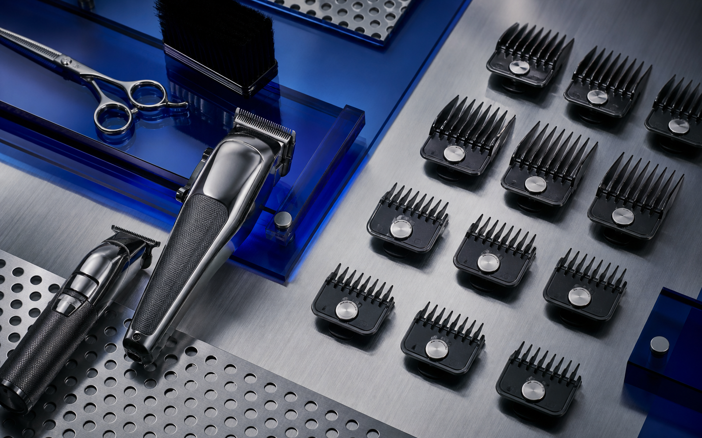

[ JL / 209 ]
Precision has a rhythm.
Javier Larios cuts at Tenth Street Barber Co. Book through the shop app or follow his work directly.

[ JL / 209 ]
Javier Larios cuts at Tenth Street Barber Co. Book through the shop app or follow his work directly.
